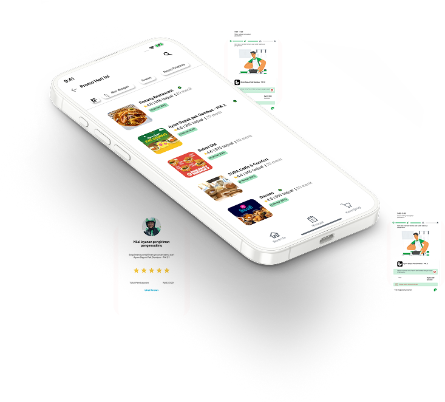

WELCOME TO
MY PORTFOLIO
I'm Charolin Weni, an entry-level UI/UX designer.
Despite being new to the field, I excel in crafting product designs.
I possess skills in Interaction Design, Visual Design, and UX Research.
List of Work

GRABFOOD
GrabFood is a feature of the Grab application that functions as a platform enabling users to order food and beverages online.
This application employs capabilities to locate the nearest restaurants to the user's location and estimate the duration required for the food to be prepared and delivered to the user's address.